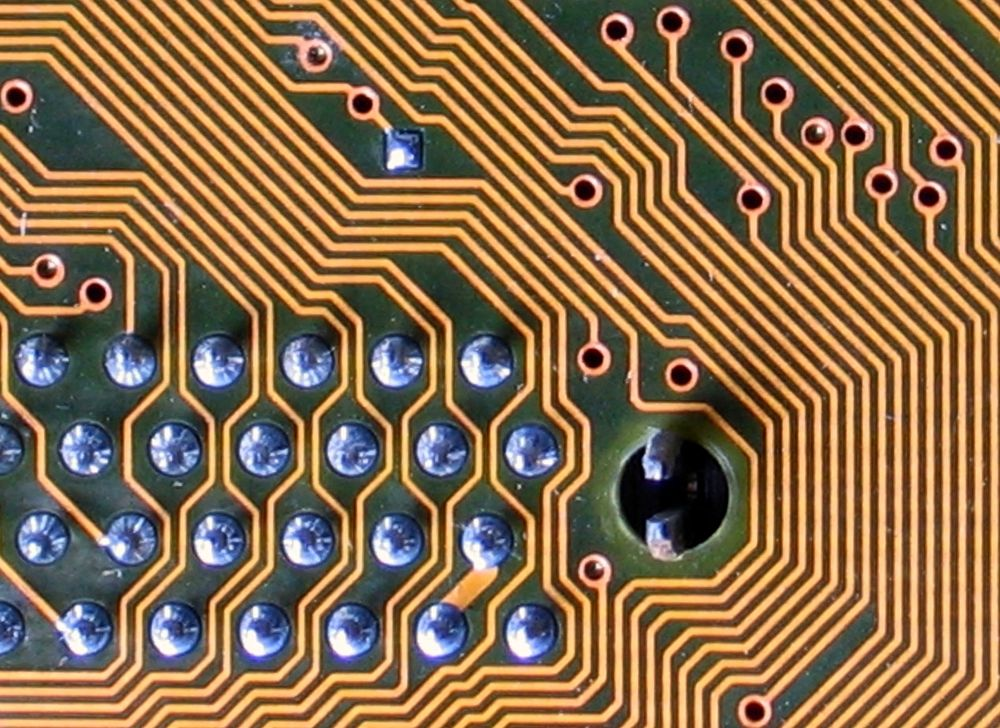

CreActivitat
Impartida per: nube7
Cursos: 1r a 4t de Primària
Pensamos con las manos: descubrimos cómo vemos el mundo y cómo lo oímos, exploramos la materia y la energía, la fuerza y el movimiento, y creamos artilugios científico-artísticos y videoclips de stop motion. Al fusionar arte, ciencia y cultura maker se aprenden conceptos científicos y STEAM (luz y óptica, ondas y acústica, fuerzas e impulso, biología y percepción), habilidades maker e ingeniería (prototipos propios, resolución de problemas y tolerancia a la frustración, uso creativo de materiales cotidianos y reciclaje) y pensamiento crítico y creatividad («¿qué pasa si…?»). Ejemplos: cubo infinito, tubo de luz, lámpara con circuitos de papel, libro de espejos, sombras de colores, pintar con luz, máscaras de cartón o esculturas en equilibrio. Alumnado de 1º a 4º de Primaria; viernes de 15:00 a 16:30, de octubre a mayo, en un aula del centro.
Aquesta activitat la imparteix nube7. Comparteix dossier i formulari d'inscripció amb Tecnonautes i CreActivitat — són la mateixa empresa, dos activitats.